Office Programme
Mit Office Programmen kann man Texte Schreiben, Tabellen ertellen und Präsentationen gestalten. Die meisten Aufgaben währen des Homeschooling können mit Word und Powerpoint erledigt werden.
Word:
Nachdem Word gestartet wurde, kann man auf „leeres Dokument“ klicken und beginnen, zu schreiben. Ganz oben beim Programm befindet sich die Titelleiste, wo der Dateiname und der Programmname (Word) stehen. Darunter ist die Multifunktionsleiste mit zehn verschiedenen Tabs (Rubriken): Datei, Start, Entwurf, Layout, Referenzen, Sendungen, Überprüfen, Ansicht und Hilfe. Für uns sind jetzt Start, Datei, Einfügen, Layout und Ansicht interessant, weil man diese am häufigsten verwendet. Um das Dokument zu speichern, drückt man auf „Datei“. Danach erscheint eine andere Seite quasi, wo man links „speichern unter“ anklicken kann. Anschließend speichert man das Dokument auf den gewünschten Ordner. Bei diesem Tab gibt es auch die Möglichkeit, das Dokument zu drucken (steht unter „speichern unter“).
Bei „Start“ kann man beispielsweise Folgendes machen:
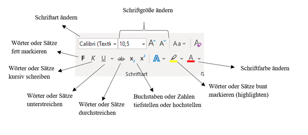
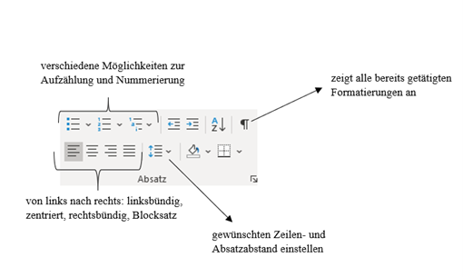
Hier kann man verschiedene Überschriften auswählen:
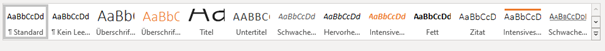
Bei „Einfügen“ kann man beispielsweise Folgendes machen:
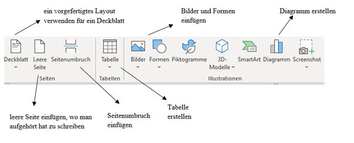
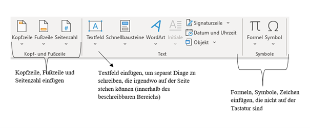
Bei „Layout“ kann man beispielweise Folgendes machen:
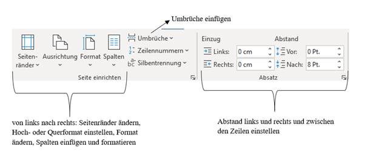
Bei „Ansicht“ kann man beispielsweise Folgendes machen:
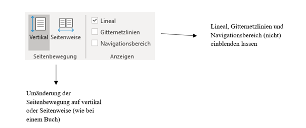
Ganz unten links bei Word gibt es eine Leiste, bei der man Seitenanzahl, Wortanzahl und Sprache sehen kann. Auf der rechten Seite kann man zoomen. Falls ihr mal etwas nicht wisst, könnt ihr ein Stichwort ganz oben bei „Suchen“ oder in der Multifunktionsleiste bei „Hilfe“ eingeben. Mit ein bisschen Übung hat man die Basics schnell drauf und kann Vieles machen! Viel Spaß! 😊
Powerpoint
Nachdem PowerPoint gestartet wurde, kann man auf „Leere Präsentation“ klicken und beginnen, die Präsentation zu gestalten. Wie bei Word, befindet sich ganz oben der Dateiname und Programmname (PowerPoint). Darunter ist die Multifunktionsleiste mit zehn Tabs (Rubriken): Datei, Start, Einfügen, Entwurf, Übergänge, Animationen, Bildschirmpräsentation, Überprüfen, Ansicht und Hilfe. Für uns sind jetzt Übergänge, Animationen und Bildschirmpräsentation interessant. Was man bei Datei, Start, Einfügen (bei Einfügen kann man eine neue Folie einfügen🡪 ganz links), Ansicht und Hilfe machen kann, könnt ihr bei den Basics von „Word“ nachschauen.
Bei „Übergänge“ kann man Folgendes machen:
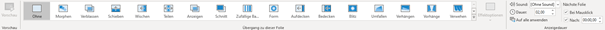
Hier kann man verschiedene Übergänge und auch Sounds einfügen. Bei Dauer kann man die Länge einstellen, die ein Übergang haben soll. Wenn das Kästchen „Bei Mausklick“ angeklickt ist, wird erst durch einen Klick die nächste Folie gezeigt. Wenn das Kästchen „Nach“ angeklickt ist und eine bestimmte Anzahl an Sekunden ausgewählt wurde, wird die nächste Folie nach diesen Sekunden gezeigt.
Bei „Animationen“ kann man Folgendes machen:
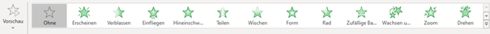
Hier kann man Effekte auswählen. Bei Vorschau kann man sich die ausgewählte Folie mit den Effekten anschauen.
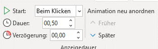
Man kann auch Dauer, Start und Verzögerung eingeben.
Bei „Bildschirmpräsentationen“ kann man beispielsweise Folgendes machen:
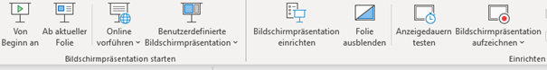
Man kann sich die Präsentation mit Vollbild anschauen, wie es dann auch bei der echten Präsentation sein würde. Da kann man sich die Präsentation entweder „von Beginn an“ oder „ab der aktuellen Folie“, bei der man gerade ist, ansehen. Man kann auch eine „Folie ausblenden“, damit diese dann nicht gezeigt wird. Außerdem kann man die „Anzeigedauer testen“, damit man sieht, wie lange die Präsentation dauert.
Mit ein bisschen Übung hat man die Basics schnell drauf und kann Vieles machen! Viel Spaß! 😊